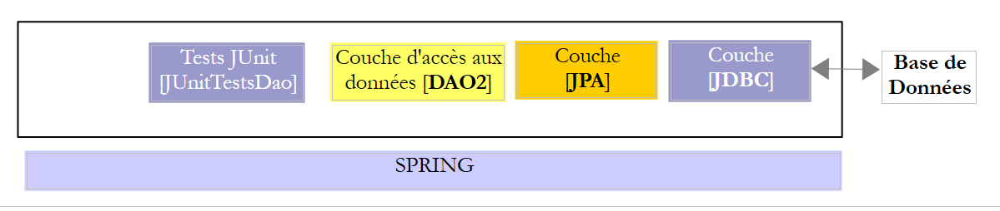
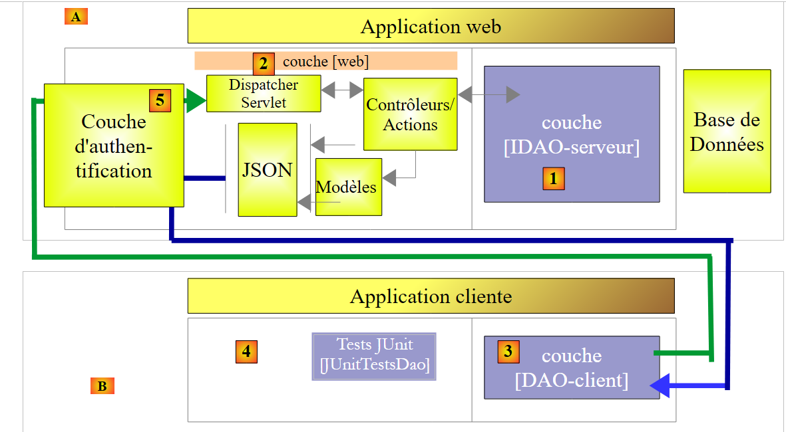

22. الخلاصة
دعونا نستعرض ما قمنا به في هذا المستند. لقد قمنا بفحص طبقتين من [DAO] باستخدام إحدى البنيتين التاليتين:
 |
 |
تم تنفيذ طبقة [DAO1] باستخدام Spring JDBC وطبقة [DAO2] باستخدام Spring JPA. نفذت طبقتا [DAO1] و[DAO2] نفس واجهة [IDAO]، مما سمح لنا بكتابة اختبار واحد [JUnitTestDao] لاختبار كلتا طبقتي [DAO]؛
وبمجرد الانتهاء من ذلك، قمنا بعرض واجهة [IDAO] على الويب على النحو التالي:
 |
- في [1]، تم عرض طبقة [IDAO] على الويب من خلال طبقة ويب [2] تم تنفيذها باستخدام Spring MVC. إنها بالفعل واجهة [IDAO] التي يتم عرضها، وقمنا ببناء نسختين من خدمة الويب اعتمادًا على ما إذا كانت هذه الواجهة قد تم تنفيذها باستخدام بنية [DAO-JDBC] أو [DAO-JPA-JDBC]؛
- في [B]، يستخدم عميل بعيد عناوين URL التي توفرها خدمة الويب، والتي تتيح الوصول إلى أساليب طبقة [IDAO-server]. وقد حرصنا على أن تقوم طبقة [DAO-Client] [3] بتنفيذ واجهة [IDAO-server] [1]. وقد أتاح لنا ذلك إعادة استخدام نفس اختبار [JUnitTestDao] الذي سبق استخدامه مرتين؛
- في [3]، تم تنفيذ طبقة [DAO-Client] باستخدام Spring RestTemplate؛
وبعد الانتهاء من ذلك، قمنا بتأمين الوصول إلى خدمة الويب:
 |
- في [5]، يمر طلب HTTP الخاص بالعميل عبر طبقة مصادقة تم تنفيذها باستخدام Spring Security؛
وبعد ذلك، قمنا بتطوير البنية السابقة لتصبح كما يلي:
 |
- في [3]، يعد تطبيق العميل بحد ذاته تطبيق ويب يقدمه خادم الويب [4]. يعرض تطبيق العميل نموذجًا [5] في المتصفح يتيح الاستعلام عن عناوين URL لخدمة الويب الآمنة. يتم التعامل مع الوصول عبر HTTP إلى خدمة الويب الآمنة بواسطة طبقة [jS] مطبقة بلغة JavaScript. تستخدم هذه البنية ما يُعرف باسم الطلبات عبر المجالات:
- تقدم خدمة الويب عناوين URL على شكل [http://machine1:port1/]؛
- يتم تنزيل تطبيق الويب الخاص بالعميل من عنوان URL [http://machine2:port2/]. إذا لم يكن [http://machine2:port2/] مطابقًا لـ [http://machine1:port1/] (نفس الجهاز، نفس المنفذ)، فسيقوم متصفح العميل بحظر مكالمات HTTP من طبقة [DAO-client-js]. لحل هذه المشكلة، يجب أن تسمح خدمة الويب بالطلبات عبر النطاقات؛
تم اختبار المشاريع المعروضة باستخدام قواعد البيانات الست التالية:
- MySQL 5 Community Edition؛
- SQL Server 2014 Express؛
- PostgreSQL 9.4؛
- Oracle Express 11g الإصدار 2؛
- IBM DB2 Express-C 10.5؛
- Firebird 2.5.4؛
بالنسبة لكل نظام من أنظمة إدارة قواعد البيانات هذه، قمنا بتطوير أربع طبقات [DAO] مختلفة:
- طبقة تم تنفيذها باستخدام Spring JDBC؛
- طبقة تم تنفيذها باستخدام Spring JPA ومزود Hibernate JPA؛
- طبقة تم تنفيذها باستخدام Spring JPA ومزود EclipseLink JPA؛
- طبقة تم تنفيذها باستخدام Spring JPA ومزود OpenJPA JPA؛
وبالتالي، تم تقديم مجموعة من أربعة وعشرين تكوينًا مختلفًا. تم بذل جهد كبير في إعادة هيكلة الكود:
- يتم كتابة معظم الكود مرة واحدة فقط. ويستند ذلك إلى مشروعين لتكوين Maven:
- أحدهما يهيئ طبقة JDBC؛
- والآخر يقوم بتكوين طبقة JPA؛
 |
 |
يتيح مشروع تكوين Maven لطبقة JDBC [1] لنظام إدارة قواعد البيانات (DBMS) معين ما يلي:
- استيراد أرشيف برنامج تشغيل JDBC؛
- تحديد بيانات اعتماد الوصول لقاعدة البيانات المستخدمة وعبارات SQL المختلفة التي سترسلها طبقة [DAO1] إلى برنامج تشغيل JDBC. على الرغم من أن لغة SQL موحدة، فقد واجهنا مشكلات في قابلية النقل، ويرجع ذلك أساسًا إلى وجود أسماء جداول/أعمدة في الاستعلامات تبين أنها كلمات رئيسية محظورة في أنظمة إدارة قواعد البيانات (DBMS) معينة (جدول ROLES في DB2، وعمود PASSWORD في Firebird). علاوة على ذلك، على الرغم من أن اسم العمود عادةً ما يكون غير حساس لحالة الأحرف (كبيرة/صغيرة)، فقد واجهنا مشكلة مع PostgreSQL فيما يتعلق بعمود ID للمفتاح الأساسي في الجداول. فقد تطلب الأمر تسميته "id" بأحرف صغيرة؛
تسمح مشاريع Maven الثلاثة لتكوين طبقة JPA [2] لنظام إدارة قواعد البيانات (DBMS) المحدد بما يلي:
- استيراد أرشيف تنفيذ JPA؛
- تكوين تطبيق JPA المستخدم لنظام إدارة قواعد البيانات (DBMS) المتصل المحدد. في الواقع، طبقة JPA هي التي تصدر أوامر SQL إلى طبقة JDBC. لكي تكون فعالة، يجب أن تعرف نظام إدارة قواعد البيانات (DBMS) من أجل إرسال أوامر SQL التي سيتعرف عليها. قد تستخدم هذه الأوامر لغة SQL الخاصة بنظام إدارة قواعد البيانات (DBMS) بالإضافة إلى ميزاته المحددة (أنواع البيانات، التسلسلات، المشغلات، الإجراءات، الإنشاء التلقائي للمفاتيح الأساسية، إلخ)؛
وبالتالي، أنشأنا أربعة وعشرين مشروع تكوين Maven (4 تكوينات × 6 أنظمة إدارة قواعد البيانات) استندت إليها جميع مشاريع تشغيل قواعد البيانات الأخرى. في المخططات أعلاه، نظرًا لأن طبقتي [DAO1] و[DAO2] توفران نفس الواجهة، تم اختبار التكوينات الـ 24 للبنيتين أعلاه باستخدام فئة اختبار واحدة [JUnitTestDao]. وبمجرد التحقق من صحة هذه البنيات، لم تكن هناك صعوبات أخرى:
- يعتمد مشروع Maven لنشر قاعدة البيانات على الويب على هاتين البنيتين. وبالتالي، هناك أيضًا 24 تكوينًا ممكنًا هنا؛
- يعتمد مشروع Maven لتأمين الوصول إلى خدمة الويب على المشروع السابق ويحتوي أيضًا على 24 تكوينًا ممكنًا؛
- أخيرًا، يعتمد مشروع Maven الذي يتيح الطلبات عبر المجالات إلى خدمة الويب الآمنة على المشروع السابق ويحتوي أيضًا على 24 تكوينًا ممكنًا؛
على الرغم من أن هذا المستند لا يغطي جميع إمكانيات لغة Java أو جميع مجالات تطبيقها، إلا أنه يمكن استخدامه كمورد تعليمي للغة. سيصل القراء الذين أتقنوا محتوى هذه الدورة إلى مستوى "Java المتقدم" في كل من استخدام اللغة وإطار عمل Spring. يمكنهم بعد ذلك مواصلة تدريبهم على Java باستخدام الكتب التالية:
- [Spring MVC and Thymeleaf by Example] [http://tahe.developpez.com/java/springmvc-thymeleaf]، الذي يواصل استكشاف نظام Spring البيئي من خلال تقديم فرع "برمجة الويب MVC". ويستخدم قاعدة بيانات أكثر تعقيدًا من تلك التي تمت دراستها هنا؛
- [AngularJS / Spring MVC Tutorial] [http://tahe.developpez.com/angularjs-spring4] الذي يقدم بنية ويب عميل/خادم، حيث يتم تنفيذ العميل باستخدام إطار عمل [AngularJS] والخادم باستخدام [Spring MVC]؛
- [مقدمة إلى Java EE] [http://tahe.developpez.com/java/javaee]، الذي يبتعد عن منظومة Spring ليتجه نحو بنية ويب تستند إلى JSF (Java Server Faces) و EJB (Enterprise JavaBeans)؛
- [مقدمة إلى برمجة أجهزة Android اللوحية] [http://tahe.developpez.com/android/exemples-intellij-aa]، الذي يصف بنية عميل/خادم حيث يكون العميل جهازًا لوحيًا يعمل بنظام Android مبرمجًا بلغة Java، ويكون الخادم خدمة ويب تم تنفيذها باستخدام Spring MVC؛